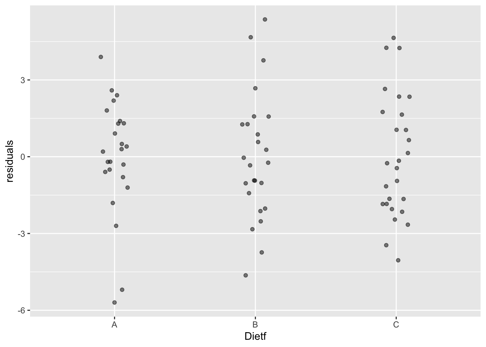
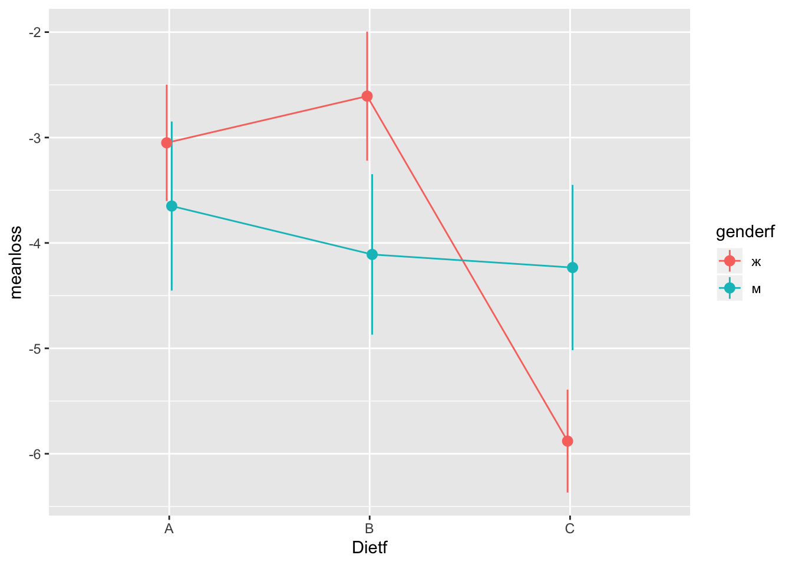
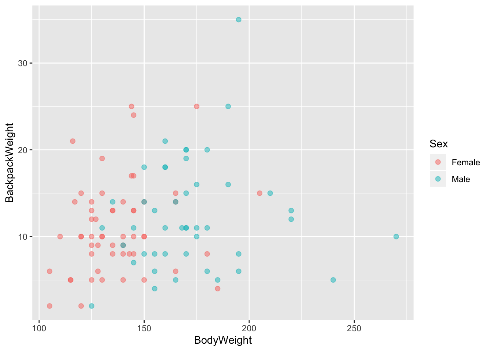

3 Неделя 2, День 2
3.1 Дисперсионный анализ (ANOVA)
Дисперсионный анализ или ANOVA2 - один из самых распространенных методов статистического анализа в психологии и многих других дисциплинах. Дисперсионный анализ очень хорошо подходит для анализа данных, полученных в эксперименте - методе организации исследования, при котором исследователь напрямую управляет уровнями независимой переменной. Терминологическая связь между дисперсионным анализом и планированием эксперимента настолько тесная, что многие термины пересекаются, поэтому нужно быть осторожными. Как и в случае с линейной регрессией, если мы что-то называем “независимой переменной” (или “фактором”), это не порождает никакой каузальной связи.
Еще одна важная вещь, которую нужно понимать про дисперсионный анализ, это то, что у этого метода очень запутывающее название: из названия кажется, что этот статистический метод для сравнения дисперсий. Нет, это не так (хотя такие статистические тесты тоже есть, и они нам сегодня пригодятся - см. 3.1.6). Нет, это просто сравнение средних в случае, если есть больше, чем 2 группы для сравнения.
У дисперсионного анализа очень много разновидностей, для которых придумали множество названий. “Обычная” ANOVA называется One-Way ANOVA, она же межгрупповая ANOVA, это аналог независимого т-теста для нескольких групп.
Давайте начнем сразу с проведения теста. Мы будем использовать данные с курса по статистике Университета Шеффилда про эффективность диет.
library(data.table)
diet <- fread("data/stcp-Rdataset-Diet.csv")Сделаем небольшой препроцессинг данных. Создадим дополнительные “факторные” переменные, создадим переменную, в которой будет разница массы “до” и “после”, удалим NA.
diet[, weight.loss := weight6weeks - pre.weight]
diet[, Dietf := factor(Diet, labels = LETTERS[1:3])]
diet[, Person := factor(Person)]
diet <- diet[complete.cases(diet),]3.1.1 Функция aov()
Попробуем сразу провести дисперсионных анализ с помощью функции aov():
aov_model <- aov(weight.loss ~ Dietf, diet)
aov_model## Call:
## aov(formula = weight.loss ~ Dietf, data = diet)
##
## Terms:
## Dietf Residuals
## Sum of Squares 60.5270 410.4018
## Deg. of Freedom 2 73
##
## Residual standard error: 2.371064
## Estimated effects may be unbalancedsummary(aov_model)## Df Sum Sq Mean Sq F value Pr(>F)
## Dietf 2 60.5 30.264 5.383 0.0066 **
## Residuals 73 410.4 5.622
## ---
## Signif. codes: 0 '***' 0.001 '**' 0.01 '*' 0.05 '.' 0.1 ' ' 1Мы получили что-то похожее на результат применения функции lm(). Правда, лаконичнее, но с новыми столбцами Sum Sq, Mean Sq и новой статистикой F вместо t. Что будет, если с теми же данными с той же формулой запустить lm() вместо aov()?
summary(lm(weight.loss ~ Dietf, diet))##
## Call:
## lm(formula = weight.loss ~ Dietf, data = diet)
##
## Residuals:
## Min 1Q Median 3Q Max
## -5.7000 -1.6519 -0.1759 1.4420 5.3680
##
## Coefficients:
## Estimate Std. Error t value Pr(>|t|)
## (Intercept) -3.3000 0.4840 -6.818 2.26e-09 ***
## DietfB 0.0320 0.6776 0.047 0.96246
## DietfC -1.8481 0.6652 -2.778 0.00694 **
## ---
## Signif. codes: 0 '***' 0.001 '**' 0.01 '*' 0.05 '.' 0.1 ' ' 1
##
## Residual standard error: 2.371 on 73 degrees of freedom
## Multiple R-squared: 0.1285, Adjusted R-squared: 0.1047
## F-statistic: 5.383 on 2 and 73 DF, p-value: 0.006596lm() превратил Dietf в две переменные, но F и p-value у двух моделей одинаковые! Кроме того, функция aov() является, по сути, просто “оберткой” над lm():
This provides a wrapper to lm for fitting linear models to balanced or unbalanced experimental designs.
3.1.2 Тестирование значимости нулевой гипотезы в ANOVA.
Как и в случае с другими статистическими тестами, мы можем выделить 4 этапа в тестировании значимости нулевой гипотезы в ANOVA:
- Формулирование нулевой и альтернативной гипотезы. Нулевая гипотеза говорит, что между средними в генеральной совокупности нет различий:
\[H_0:\mu_1 = \mu_2 = ... = \mu_n\] Можно было бы предположить, что ненулевая гипотеза звучит как “все средние не равны”, но вообще-то это не так. Альтернативная гипотеза в дисперсионном анализе звучит так:
\[H_1: \text{Не все средние равны}\]
- Подсчет статистики. Как мы уже видели раньше, в дисперсионном анализе используется новая для нас статистика F. Впрочем, мы ее видели, когда смотрели на аутпут функции
lm(), когда делали линейную регрессию. Чтобы считать F (если вдруг мы хотим сделать это вручную), нужно построить талбицу ANOVA (ANOVA table).
| Таблица ANOVA | Степени свободы | Суммы квадратов | Средние квадраты | F-статистика |
|---|---|---|---|---|
| Межгрупповые | \(df_{b}\) | \(SS_{b}\) | \(MS_{b} =\frac{SS_{b}}{df_{b}}\) | \(F=\frac{MS_{b}}{MS_{w}}\) |
| Внутригрупповые | \(df_{w}\) | \(SS_{w}\) | \(MS_{w} =\frac{SS_{w}}{df_{w}}\) | |
| Общие | \(df_{t}\) | \(SS_{t}= SS_{b} + SS_{w}\) |
Именно эту таблицу мы видели, когда использовали функцию aov():
summary(aov_model)## Df Sum Sq Mean Sq F value Pr(>F)
## Dietf 2 60.5 30.264 5.383 0.0066 **
## Residuals 73 410.4 5.622
## ---
## Signif. codes: 0 '***' 0.001 '**' 0.01 '*' 0.05 '.' 0.1 ' ' 1Вот как это все считается:
| Таблица ANOVA | Степени свободы | Суммы квадратов | Средние квадраты | F-статистика |
|---|---|---|---|---|
| Между | \(df_{b}=J-1\) | \(SS_{b}= \sum\limits_{j=1}^J \sum\limits_{i=1}^{n_j} (\overline{x_j}-\overline{x})^2\) | \(MS_{b} =\frac{SS_{b}}{df_{b}}\) | \(F=\frac{MS_{b}}{MS_{w}}\) |
| Внутри | \(df_{w}=N-J\) | \(SS_{w}= \sum\limits_{j=1}^J \sum\limits_{i=1}^{n_j} (x_{ij}-\overline{x_j})^2\) | \(MS_{w} =\frac{SS_{w}}{df_{w}}\) | |
| Общие | \(df_{t}=N-1\) | \(SS_{t}= \sum\limits_{j=1}^J \sum\limits_{i=1}^{n_j} (x_{ij}-\overline{x})^2\) |
\(J\) означает количество групп, \(N\) - общее количество наблюдений во всех группах, \(n_j\) означает количество наблюдений в группе j, а \(x_{ij}\) - наблюдение под номером \(i\) в группе \(j\).
Вариабельность обозначается \(SS\) и означает “сумму квадратов” (sum of squares) - это то же, что и дисперсия, только мы не делим вме в конце на количество наблюдений (или количество наблюдений минус один): \[SS = \sum\limits_{i=1}^{n_j} (x_{i}-\overline{x})^2\]
Здесь много формул, но суть довольно простая: мы разделяем вариабельность зависимой переменной на внутригрупповую и межгрупповую, считаем их соотношение, которое и будет F. В среднем, F будет равен 1 при верности нулевой гипотезы. Это означает, что и межгрупповая вариабельность, и внутригрупповая вариабельность - это просто шум. Но если же межгрупповая вариабельность - это не просто шум, то это соотношение будет сильно больше единицы.
- Подсчет p-value. В т-тесте мы смотрели, как статистика распределена при условии верности нулевой гипотезы. То есть что будет, если нулевая гипотеза верна, мы будем повторять эксперимент с точно таким же дизайном (и размером выборок) бесконечное количество раз и считать F.
betweendf <- 2
withindf <- 73
f <- summary(aov_model)[[1]]$F[1]
v <- seq(0.1,10, 0.01)
fdist <- data.frame(fvalues = v, pdf = df(v, betweendf, withindf))
library(ggplot2)
label <- paste0("F(", betweendf, ", ", withindf, ") = ", round(f, 3))
ggplot(fdist, aes(x = fvalues, y = pdf))+
geom_line()+
geom_vline(xintercept = f)+
annotate("text", x = f+1, y = 0.2, label = label)+
scale_y_continuous(expand=c(0,0)) +
theme_minimal()+
theme(axis.line.y = element_blank(),
axis.ticks.y = element_blank(),
axis.text.y = element_blank(),
axis.title.y = element_blank()) Рисунок 3.1: F-распределение при верности нулевой гипотезы (см. детали в тексте)
Заметьте, распределение F несимметричное3. Это значит, что мы всегда считаем считаем площадь от F до плюс бесконечности (без умножения на 2, как мы это делали в т-тесте):
1 - pf(f, betweendf, withindf)## [1] 0.006595853Это и есть наш p-value!
- Сравнение p-value с уровнем \(\alpha\). Самый простой этап: если наш p-value меньше, чем \(\alpha\) (который обычно равен .05), то мы отвергаем нулевую гипотезу. Если нет - не отвергаем.
В нашем случае это 0.0065959, что, очевидно, меньше, чем .05. Отвергаем нулевую гипотезу (о том, что нет различий), принимаем ненулевую (о том, что различия есть). Все!
3.1.3 Post-hoc тесты
Тем не менее, дисперсионного анализа недостаточно, чтобы решить, какие именно группы между собой различаются. Для этого нужно проводить post-hoc тесты (апостериорные тесты).
Post-hoc переводится с латыни как “после этого”. Post-hoc тесты проводятся, если в результате ANOVA Вы отвергли нулевую гипотезу. Собственно, пост-хоки никак не связаны с дисперсионным анализом на уровне расчетов - это абсолютно независимые тесты, но исторически так сложилось, что они известны именно как дополнительный этап ANOVA.
Самый простой вариант пост-хок теста - это попарные т-тесты с поправками на множественные сравнения:
pairwise.t.test(diet$weight.loss, diet$Dietf)##
## Pairwise comparisons using t tests with pooled SD
##
## data: diet$weight.loss and diet$Dietf
##
## A B
## B 0.962 -
## C 0.017 0.017
##
## P value adjustment method: holmВторой подход связан с использованием специализированных тестов, таких как тест Тьюки (Tukey Honest Significant Differences = Tukey HSD). Для этого в R есть функция TukeyHSD(), которую нужно применять на объект aov:
TukeyHSD(aov_model)## Tukey multiple comparisons of means
## 95% family-wise confidence level
##
## Fit: aov(formula = weight.loss ~ Dietf, data = diet)
##
## $Dietf
## diff lwr upr p adj
## B-A 0.032000 -1.589085 1.6530850 0.9987711
## C-A -1.848148 -3.439554 -0.2567422 0.0188047
## C-B -1.880148 -3.454614 -0.3056826 0.01520203.1.4 ANOVA и т-тест как частные случаи линейной регрессии
Как мы уже видели, если применить lm() или aov() на одних и тех же данных с одной и той же формулой, то результат будет очень похожим. Но есть одно но: lm() создает из одного фактора две переменных-предиктора:
summary(lm(weight.loss ~ Dietf, diet))##
## Call:
## lm(formula = weight.loss ~ Dietf, data = diet)
##
## Residuals:
## Min 1Q Median 3Q Max
## -5.7000 -1.6519 -0.1759 1.4420 5.3680
##
## Coefficients:
## Estimate Std. Error t value Pr(>|t|)
## (Intercept) -3.3000 0.4840 -6.818 2.26e-09 ***
## DietfB 0.0320 0.6776 0.047 0.96246
## DietfC -1.8481 0.6652 -2.778 0.00694 **
## ---
## Signif. codes: 0 '***' 0.001 '**' 0.01 '*' 0.05 '.' 0.1 ' ' 1
##
## Residual standard error: 2.371 on 73 degrees of freedom
## Multiple R-squared: 0.1285, Adjusted R-squared: 0.1047
## F-statistic: 5.383 on 2 and 73 DF, p-value: 0.006596Дело в том, что мы не можем просто так загнать номинативную переменную в качестве предиктора в линейную регрессию. Мы можем это легко сделать, если у нас всего два уровня в номинативном предикторе. Тогда один из уровней можно обозначить за 0, другой - за 1. Такие переменные иногда называются “бинарными”. Тогда это легко использовать в линейной регрессии:
summary(lm(weight.loss ~ gender, diet))##
## Call:
## lm(formula = weight.loss ~ gender, data = diet)
##
## Residuals:
## Min 1Q Median 3Q Max
## -5.1848 -1.7264 0.2041 1.6846 5.9930
##
## Coefficients:
## Estimate Std. Error t value Pr(>|t|)
## (Intercept) -3.8930 0.3846 -10.123 1.3e-15 ***
## gender -0.1221 0.5836 -0.209 0.835
## ---
## Signif. codes: 0 '***' 0.001 '**' 0.01 '*' 0.05 '.' 0.1 ' ' 1
##
## Residual standard error: 2.522 on 74 degrees of freedom
## Multiple R-squared: 0.0005914, Adjusted R-squared: -0.01291
## F-statistic: 0.04379 on 1 and 74 DF, p-value: 0.8348Можно ли так делать? Вполне! Допущения линейной регрессии касаются остатков, а не переменных самих по себе. Разве что это немного избыточно: линейная регрессия с бинарным предиктором - это фактически независимый т-тест:
t.test(weight.loss ~ gender, diet, var.equal = TRUE)##
## Two Sample t-test
##
## data: weight.loss by gender
## t = 0.20925, df = 74, p-value = 0.8348
## alternative hypothesis: true difference in means is not equal to 0
## 95 percent confidence interval:
## -1.040810 1.285067
## sample estimates:
## mean in group 0 mean in group 1
## -3.893023 -4.015152Как видите, p-value совпадают! А t статистика в квадрате - это F (при двух группах):
t.test(weight.loss ~ gender, diet, var.equal = TRUE)$statistic^2## t
## 0.04378592Более того, те же самые результаты можно получить и с помощью коэффициента корреляции Пирсона:
cor.test(diet$gender, diet$weight.loss)##
## Pearson's product-moment correlation
##
## data: diet$gender and diet$weight.loss
## t = -0.20925, df = 74, p-value = 0.8348
## alternative hypothesis: true correlation is not equal to 0
## 95 percent confidence interval:
## -0.2484113 0.2022466
## sample estimates:
## cor
## -0.02431772Теперь должно быть понятно, почему все эти функции делают вроде бы разные статистические тесты, но выдают такой похожий результат - это фактически один и тот же метод! Все эти методы (и некоторые из тех, что будем рассматривать далее) можно рассматривать как разновидности множественной линейной регрессии.4
3.1.5 Dummy coding
Тем не менее, вопрос остается открытым: как превратить номинативную переменную в количественную и загнать ее в регрессию? Для этого можно использовать “фиктивное кодирование” (dummy coding):
diet[, isA := as.numeric(Dietf == "A")]
diet[, isB := as.numeric(Dietf == "B")]
diet[, isC := as.numeric(Dietf == "C")]
diet[c(1:2,15:16,35:36),c("Dietf", "isA", "isB", "isC")]## Dietf isA isB isC
## 1: A 1 0 0
## 2: A 1 0 0
## 3: B 0 1 0
## 4: B 0 1 0
## 5: C 0 0 1
## 6: C 0 0 1Заметьте, что такое кодирование избыточно. Если мы знаем, что диет 3, а данная диета - это не диета В и не диета С, то это диета А. Значит, одна из созданных нами колонок - “лишняя”:
diet[, isA := NULL]Используем новую колонки для линейной регрессии и сравним результаты:
summary(lm(weight.loss ~ isB + isC, diet))##
## Call:
## lm(formula = weight.loss ~ isB + isC, data = diet)
##
## Residuals:
## Min 1Q Median 3Q Max
## -5.7000 -1.6519 -0.1759 1.4420 5.3680
##
## Coefficients:
## Estimate Std. Error t value Pr(>|t|)
## (Intercept) -3.3000 0.4840 -6.818 2.26e-09 ***
## isB 0.0320 0.6776 0.047 0.96246
## isC -1.8481 0.6652 -2.778 0.00694 **
## ---
## Signif. codes: 0 '***' 0.001 '**' 0.01 '*' 0.05 '.' 0.1 ' ' 1
##
## Residual standard error: 2.371 on 73 degrees of freedom
## Multiple R-squared: 0.1285, Adjusted R-squared: 0.1047
## F-statistic: 5.383 on 2 and 73 DF, p-value: 0.006596summary(lm(weight.loss ~ Dietf, diet))##
## Call:
## lm(formula = weight.loss ~ Dietf, data = diet)
##
## Residuals:
## Min 1Q Median 3Q Max
## -5.7000 -1.6519 -0.1759 1.4420 5.3680
##
## Coefficients:
## Estimate Std. Error t value Pr(>|t|)
## (Intercept) -3.3000 0.4840 -6.818 2.26e-09 ***
## DietfB 0.0320 0.6776 0.047 0.96246
## DietfC -1.8481 0.6652 -2.778 0.00694 **
## ---
## Signif. codes: 0 '***' 0.001 '**' 0.01 '*' 0.05 '.' 0.1 ' ' 1
##
## Residual standard error: 2.371 on 73 degrees of freedom
## Multiple R-squared: 0.1285, Adjusted R-squared: 0.1047
## F-statistic: 5.383 on 2 and 73 DF, p-value: 0.006596То же самое!
3.1.6 Допущения ANOVA
- Нормальность распределения ошибок:
hist(residuals(aov_model))Как мы видим, распределение не сильно далеко от нормального - этого вполне достаточно. ANOVA - это метод достаточно устойчивый к отклонениям от нормальности.
- Гомогенность дисперсий.
То есть их равенство. Можно посмотреть на распределение остатков:
diet$residuals <- residuals(aov_model)
ggplot(diet, aes(x = Dietf, y = residuals))+ geom_jitter(width = 0.1, alpha = 0.5)
Все выглядит неплохо: нет какой-то одной группы, у которой разброс сильно больше или меньше. Есть и более формальные способы проверить равенство дисперсий. Например, с помощью теста Ливиня (Levene’s test). Для того, чтобы его провести, мы воспользуемся новым пакетом ez (читать как “easy”). Этот пакет сильно упрощает проведение дисперсионного анализа, особенно для более сложных дизайнов.
install.packages("ez")Синтаксис довольно простой: нужно указать, данные, зависимую переменную, переменную с ID, факторы. Необходимо прописать фактор в between = или within =. В данном случае - в between =.
library(ez)
ez_model <- ezANOVA(data = diet,
dv= weight.loss,
wid = Person,
between = Dietf,
detailed = T,
return_aov = T)## Warning: You have removed one or more Ss from the analysis. Refactoring
## "Person" for ANOVA.## Warning: Data is unbalanced (unequal N per group). Make sure you specified
## a well-considered value for the type argument to ezANOVA().## Coefficient covariances computed by hccm()ez_model## $ANOVA
## Effect DFn DFd SSn SSd F p p<.05 ges
## 1 Dietf 2 73 60.52701 410.4018 5.383104 0.006595853 * 0.1285269
##
## $`Levene's Test for Homogeneity of Variance`
## DFn DFd SSn SSd F p p<.05
## 1 2 73 2.040419 160.8859 0.4629076 0.6312856
##
## $aov
## Call:
## aov(formula = formula(aov_formula), data = data)
##
## Terms:
## Dietf Residuals
## Sum of Squares 60.5270 410.4018
## Deg. of Freedom 2 73
##
## Residual standard error: 2.371064
## Estimated effects may be unbalancedЕсли при проведении теста Ливиня мы получаем p < .05, то мы отбрасываем нулевую гипотезу о равенстве дисперсий. В данном случае мы не можем ее отбросить и поэтому принимаем5
Полученный объект (если поставить return_aov = T) содержит еще и объект aov() - на случай, если у Вас есть функции, которые работают с этим классом:
TukeyHSD(ez_model$aov)## Tukey multiple comparisons of means
## 95% family-wise confidence level
##
## Fit: aov(formula = formula(aov_formula), data = data)
##
## $Dietf
## diff lwr upr p adj
## B-A 0.032000 -1.589085 1.6530850 0.9987711
## C-A -1.848148 -3.439554 -0.2567422 0.0188047
## C-B -1.880148 -3.454614 -0.3056826 0.0152020- Примерно одинаковое количество испытуемых в разных группах. Здесь у нас все в порядке:
diet[,.N, by = Dietf]## Dietf N
## 1: A 24
## 2: B 25
## 3: C 27Небольшие различия в размерах групп - это ОК, тем более, что на практике такое очень часто случается: кого-то пришлось выкинуть из анализа, для какой-то строчки были потеряны данные и т.д. Однако больших различий в размерах групп стоит избегать. Самое плохое, когда группы различаются значительно по размеру (более чем в 2 раза) и вариабельность внутри групп отличается значительно (более чем в 2 раза).
3.1.7 Многофакторный дисперсионный анализ (Factorial ANOVA)
На практике можно встретить One-Way ANOVA (однофакторную ANOVA) довольно редко. Обычно в исследованиях встречается многофакторный дисперсионный анализ, в котором проверяется влияние сразу нескольких факторов. В научных статьях это обозначается примерно так: “3х2 ANOVA”. Это означает, что был проведен двухфакторный дисперсионный анализ, причем в одном факторе было три уровня, во втором - два. В нашем случае это будут факторы “Диета” и “Пол”. Это означает, что у нас две гипотезы: о влиянии диеты на потерю веса и о влиянии пола на потерю веса. Кроме того, появляется гипотеза о взаимодействии факторов - то есть о том, что разные диеты по разному влияют на потерю веса для разных полов.
Взаимодействие двух факторов хорошо видно на графике с линиями: если две линии параллельны, то взаимодействия нет. Если они не параллельны (пересекаются, сходятся, расходятся), то взаимодействие есть.
diet[, genderf:=factor(gender, labels = c("ж", "м"))]
sem <- function(x) sd(x)/sqrt(length(x))
pivot <- diet[,.(meanloss = mean(weight.loss), se = sem(weight.loss)), by = .(Dietf, genderf)]
library(ggplot2)
pd = position_dodge(0.05)
ggplot(pivot, aes(x = Dietf, y = meanloss, colour = genderf))+
geom_line(aes(group = genderf), position = pd)+
geom_pointrange(aes(ymin = meanloss - se, ymax = meanloss +se), position = pd)
Как видно по картинке, разница в эффективности диеты С по сравнению с другими видна только для женщин.
ezANOVA(data = diet,
dv= weight.loss,
wid = Person,
between = .(Dietf, gender),
detailed = T,
return_aov = T)## Warning: You have removed one or more Ss from the analysis. Refactoring
## "Person" for ANOVA.## Warning: "gender" will be treated as numeric.## Warning: Data is unbalanced (unequal N per group). Make sure you specified
## a well-considered value for the type argument to ezANOVA().## Coefficient covariances computed by hccm()## Warning: At least one numeric between-Ss variable detected, therefore no
## assumption test will be returned.## $ANOVA
## Effect DFn DFd SSn SSd F p p<.05
## 1 Dietf 2 70 60.4172197 376.329 5.61902602 0.00545568 *
## 2 gender 1 70 0.1686958 376.329 0.03137868 0.85990976
## 3 Dietf:gender 2 70 33.9040683 376.329 3.15320438 0.04884228 *
## ges
## 1 0.138334829
## 2 0.000448066
## 3 0.082645860
##
## $aov
## Call:
## aov(formula = formula(aov_formula), data = data)
##
## Terms:
## Dietf gender Dietf:gender Residuals
## Sum of Squares 60.5270 0.1687 33.9041 376.3290
## Deg. of Freedom 2 1 2 70
##
## Residual standard error: 2.318648
## Estimated effects may be unbalancedИтак, теперь мы проверяем три гипотезы вместо одной. Действительно, взаимодействие диеты и пола оказалось значимым, как и ожидалось.
3.1.8 Дисперсионный анализ с повторными измерениями (Repeated-measures ANOVA)
Если обычный дисперсионный анализ - это аналог независимого т-теста для нескольких групп, то дисперсионный анализ с повторными измерениями - это аналог зависимого т-теста. В функции ezANOVA() для проведения дисперсионного анализа с повторными измерениями нужно просто поставить нужным параметром внутригрупповую переменную. Это означает, что в данном случае мы должны иметь данные в длинном формате, для чего мы воспользуемся функцией melt():
dietlong <- melt(diet,
measure = c("pre.weight", "weight6weeks"),
variable = "time",
value = "weight")## Warning in melt.data.table(diet, measure = c("pre.weight",
## "weight6weeks"), : 'measure.vars' [pre.weight, weight6weeks] are not all
## of the same type. By order of hierarchy, the molten data value column will
## be of type 'double'. All measure variables not of type 'double' will be
## coerced too. Check DETAILS in ?melt.data.table for more on coercion.dietlongC <- droplevels(dietlong[Dietf == "C",])ezANOVA(dietlongC,
dv = weight,
wid = Person,
within = time)## $ANOVA
## Effect DFn DFd F p p<.05 ges
## 2 time 1 26 124.6949 2.030459e-11 * 0.09860363.1.9 Смешанный дисперсионный анализ (Mixed between-within subjects ANOVA)
Нам никто не мешает совмещать и внутригруппоые, и межгрупповые факторы вместе.
ezANOVA(dietlong,
dv = weight,
wid = Person,
within = time,
between = Dietf)## Warning: You have removed one or more Ss from the analysis. Refactoring
## "Person" for ANOVA.## Warning: Data is unbalanced (unequal N per group). Make sure you specified
## a well-considered value for the type argument to ezANOVA().## $ANOVA
## Effect DFn DFd F p p<.05 ges
## 2 Dietf 2 73 0.8280758 4.409507e-01 0.021710057
## 3 time 1 73 210.5004045 3.346036e-23 * 0.059209996
## 4 Dietf:time 2 73 5.3831045 6.595853e-03 * 0.003208607Здесь нас интересует взаимодействие между факторами. Результаты, полученные для этой гипотезы, идентичны результатам по обычному дисперсионному анализу на разницу до и после - по сути это одно и то же.
3.1.10 Заключение
Мы разобрали много разных вариантов дисперсионного анализа. И это неудивительно - дисперсионный анализ является одним из самых распространенных статистических методов, в особенности в экспериментальных науках. При этом дисперсионный анализ можно представить как частный случай множественной линейной регрессии!
3.2 RMarkdown
RMarkdown - это мощный инструмент создания отчетов с использованием R (и других языков программирования). С помощью RMarkdown можно превратить скрипт с анализом в красивый отчет - Word-документ, PDF-документ, веб-страницу, презентацию (с интерактивными элементами!). Кстати, этот сайт тоже сделан с помощью RMarkdown.
Вот как это работает:
В основе всего лежит pandoc - программа, которая преобразует разные форматы друг в друга. Поскольку разные форматы и даже виды документов имеют много схожих элементов, это вохможно сделать: например, и Word-файлы, и LaTeX, и HTML-документы имеют заголовки разных уровней.
Markdown - это еще одна разметка. Ее преимущество - в удобстве использовании и простоте синтаксиса. Например, именно эта разметка используется на GitHub для ReadMe файлов. Markdown-документы - это просто текстовые документы с .Md разрешением.
knitr - R пакет для работы со специальными файлами .Rmd для превращения их в обычные .Md. Отличие .Rmd от .Md в наличии специально оформленных кусков кода (чанков). Эти куски кода выполняются и в .Md файле кроме самого кода (или даже без него) вставляется результат выполнения этого кода. Например, результат выполнения статистических тестов или график.
RMarkdown - просто удобная оболочка над knitr с нужными настройками.
Пример Markdown кода:

Как работает RMarkdown
Вот так делать заголовки:
# R Markdown
## Что такое RMarkdown
## Чанки с кодом Это чанк с кодом. Он отделяется ``` с обоих сторон и {r}. Это означает, что внутри находится код на R, который должен быть выполнен:
``` {r}
2+2
```
2+2## [1] 43.2.1 Настройки чанка
У чанка с кодом есть набор настроек. Самый важные из них такие:
echo: будет ли показан сам код
message и warning: будут ли показаны сообщения и предупреждения, всплывающие во время исполнения кода
eval: будет ли испольняться код внутри чанка
3.2.2 Настройка нескольких чанков
Все эти настройки можно настроить как для отдельных чанков, так и для все чанков сразу:
knitr::opts_chunk$set(echo = TRUE, message = FALSE, warning = FALSE)3.2.3 Чанки с Python!
Вместо {r} нужно написать {python}
x = 'hello, python !'
print (x.split(" "))## ['hello,', 'python', '!']3.2.4 Код вне чанков (inline code)
Число пи равно ` r pi `:
Число пи равно 3.1415927
3.2.5 Синтаксис Markdown (без R)
3.2.5.1 Выделение текста
*Курсив*
_Тоже курсив_
**Полужирный**
__Тоже полужирный__Курсив Тоже курсив Полужирный Тоже полужирный
3.2.5.2 Заголовки разных уровней
## Заголовки разных уровней
### Мне заголовок
#### И моему сыну тоже
##### И моему!
###### OK, boomer
3.2.5.3 Списки
Первый вариант списка выглядит так:
- Можно и с подсписком
Почему бы и нет?
- Кому нужен порядок
- Тот списки номерует
3.2.5.4 Цитаты
Цитата:
Я устал
Который год во мне живет нарвал
3.2.6 Таблицы
library(data.table)
go <- fread("data/iGLAS for R course.csv")
go[1:4,1:4]## StartDate EndDate Status IPAddress
## 1: 1/15/2017 1/16/2017 0 144.139.7.52
## 2: 1/27/2017 1/27/2017 0 31.54.151.215
## 3: 1/24/2017 1/24/2017 0 176.62.130.7
## 4: 01/10/2017 1/23/2017 0 86.161.181.218library(knitr)
kable(go[1:5,1:4])| StartDate | EndDate | Status | IPAddress |
|---|---|---|---|
| 1/15/2017 | 1/16/2017 | 0 | 144.139.7.52 |
| 1/27/2017 | 1/27/2017 | 0 | 31.54.151.215 |
| 1/24/2017 | 1/24/2017 | 0 | 176.62.130.7 |
| 01/10/2017 | 1/23/2017 | 0 | 86.161.181.218 |
| 12/11/2016 | 12/11/2016 | 0 | 31.211.8.249 |
3.2.6.1 Динамические таблицы
library(DT)
datatable(go[1:5, 1:5])3.2.7 Визуализации
library(ggplot2)
library(Stat2Data)
library(data.table)
data("Backpack")
back <- as.data.table(Backpack)
ggplot_scatter <- ggplot(back, aes(x = BodyWeight, y = BackpackWeight))+
geom_point(aes(colour = Sex), alpha = 0.5, size = 2)
ggplot_scatter
3.2.8 Динамические визуализации в plotly
library(plotly)
ggplotly(ggplot_scatter)3.2.9 Вставлять HTML
Можно собирать RMarkdown документ в разные форматы: .pdf (с помощью LaTeX), Word-файл, HTML-страницу и некоторые другие форматы. Если во собираете документ соответствующего формата, то вам доступны и соответствующие плюшки этого формата. Например, этот сайт - это .Rmd, собранный в HTML. Я могу вставлять сюда любой HTML код. Например, видео с YouTube!
<iframe width="966" height="543" src="https://www.youtube.com/embed/hHW1oY26kxQ" frameborder="0" allow="accelerometer; autoplay; encrypted-media; gyroscope; picture-in-picture" allowfullscreen></iframe>Потом, правда, оказалось, что в данном случае факторный анализ ничего не доказывает, зато метод оказался очень полезным и получил большое распространение (особенно в психологии).↩
Форма F-распределения будет сильно зависеть от числа степеней свободы. Но оно всегда определено от 0 до плюс бесконечности: в числителе и знаменателе всегда неотрицательные числа.↩
Обобщением множественной линейной регрессии (вернее, одним из) можно считать общую линейную модель (general linear model). Общая линейная модель может предсказывать не одну, а сразу несколько объясняемых переменных в отличие от множественной линейной регрессии. Следующим этапом обобщения служит обобщенная линейная модель (generalized linear model). Фишка последней в том, что можно использовать не только модели с нормально распределенными остатками, но и, например, логистическую и пуассоновскую регрессию.↩
Вообще-то эта логика не совсем корректна. Тест Ливиня - это такой же статистический тест, как и остальные. Поэтому считать, что допущения соблюдаются на основании того, что p-value больше допустимого уровня \(\alpha\), - это неправильно. Но для проверки допущений такая не очень корректная практика считается допустимой.↩